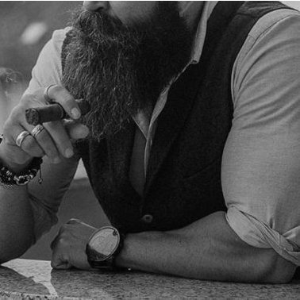

Leandre's tools
Poke me :
@leandrosins
Retouche-moi plus bas
Facilement flouter, coller un émoji ou signer une photo.
Mozaïc-moi plus fort
Assembler 2, 4 ou 6 photos en une mosaïque, en portrait ou en paysage.
GIF-moi encore
Transformer un extrait vidéo en GIF animé, avec texte et Erotic mod.
Impressionne-moi le corps
Transformer une photo en peinture au couteau et au pinceau.